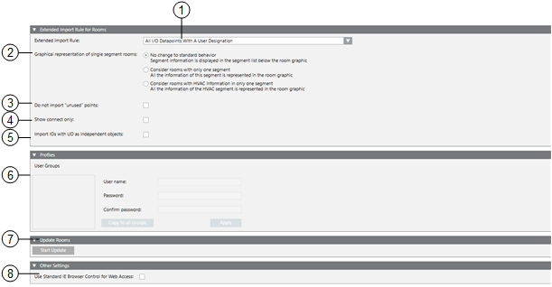
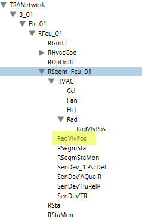
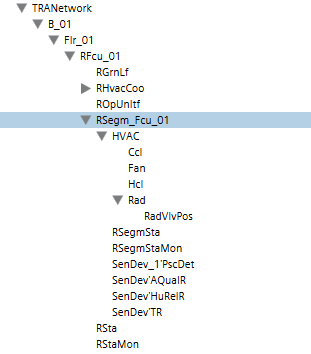
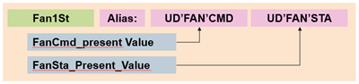
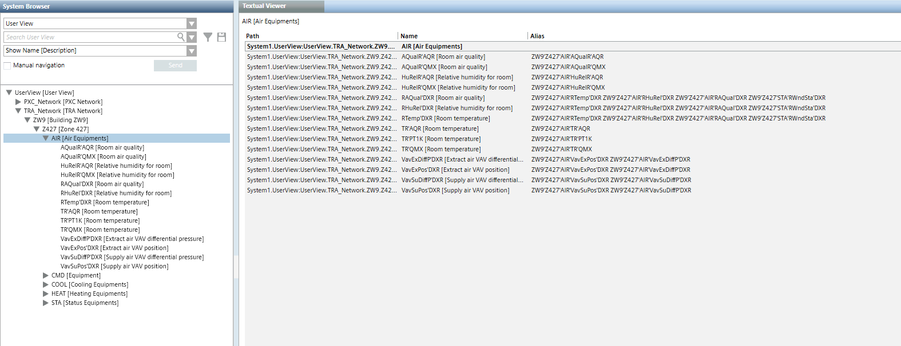
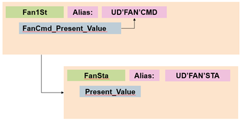
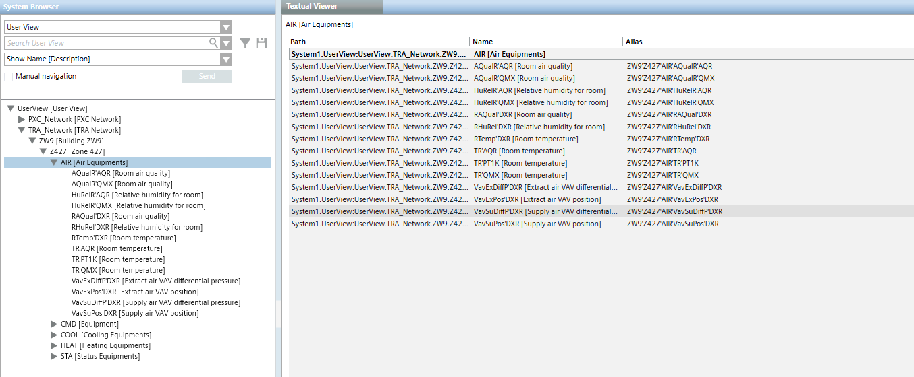
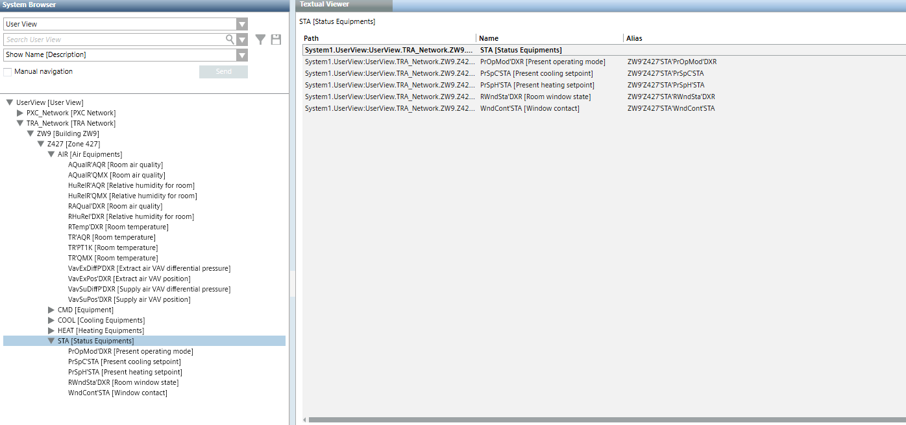
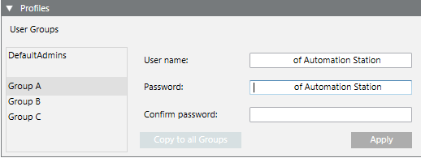

Desigo Building Automation Pane
You can set the graphical and hierarchical display of room information in the Desigo Building Automation pane.
- Set extended import rules.
- Define graphic displays of individual segment rooms.
- Hierarchically display the user designation for child objects.
- Login profiles to automatically connect to ABT-SSA Assistant or Web Interface.
- Manually update rooms in System Browser if segment assignments are made.
- Set IE Browser as the default.

Desigo Building Automation Pane | ||
| Description | |
1 | Extended import rules You must use this function if you want to import more data points than were entered in Application modeling. Using extended import rules, you can import data points as defined under User designation or Object type and that belong to the overall project. Set your own extended import rules or use predefined extended import rules under Headquarters.
| |
2 | Graphic displays of individual segment rooms When depicting rooms, the associated segments are displayed with a supplemental link. For one room, only one segment with a supplemental graphic template is opened. You can set the display of information for the room and segment on one graphic template for the entire network via an individual room option. The graphic depiction is in one graphic template if the individual room option is enabled prior to import. As a consequence:
| |
3 | Do not import unused points If Do not import unused points is selected, no data points are imported that have, under property Object Usage, the state Not Used: By operation, Not Used: By propagation or Not Used: Operation/propagation. | |
4 | Show connect objects only In System Browser, the display of owned objects (as defined in ABT Site) can be influenced in the logical view prior to performing a data import.
| |
Cleared | Selected | |
|  |  |
5 | Apply user designation to data point and its children The function is enabled for the hierarchical display in the user view if the room application applies the user designation (Alias text field) to the data point and its children. Not enabled, the user designation is displayed in sequence:   Enabled, the user designation is displayed hierarchically:   Display the user designation on the child objects (STA).  NOTE: Update country-specific symbols, mapping pages, and functions to display the user designation on child objects. | |
6
| User Groups One password can be defined for each user group per Desigo automation station. The password must be entered when connecting to the Setup and Service Assistant if passwords differ on the network. In the event of multiple passwords, we recommend using the password that is used on most Desigo automation stations. | |
User Name Enter the user name and password of the Desigo Automation user profile.  | ||
Copy in groups When a password applies to all groups, you can copy the entries to all groups. | ||
7 | Refresh rooms The hierarchy displayed in System Browser must be manually refreshed if Desigo CC or the Engineering Tool changes segment assignments. It is normally required after reimporting the data. Only the rooms assigned to the same network are refreshed. The System Browser is automatically refreshed after saving using Room Management. | |
8 | Use the default IE browser for TRA web access The web client SSA Wizard or ABT-SSA Wizard or Web Interface is based on the Chrome web controls. This permits the correct display of Desigo automation station graphics. The manufacturer provides the security updates for the control. Web controls can be switched off in the event of a threat to cyber security by selecting the check box Use the standard IE browser for web access. The SSA wizard or ABT-SSA wizard or Web Interface then applies IE web control. Regular Windows updates eliminate threats to cyber security. | |